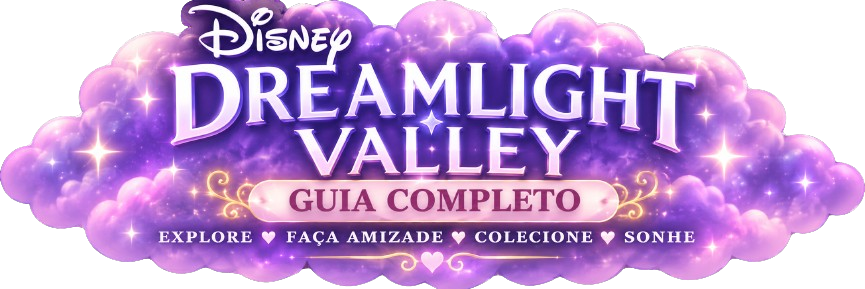

Este guia precisa do JavaScript ativado para carregar receitas, pets, traduções e o contador de presença.

RELÓGIO MÁGICO
✦
✧
✦
✧
✦
✧
✦
✧
☾
--:--
Carregando data...
Consultando o céu mágico...
☾ Ajustar Relógio ✦
Mova e redimensione como quiser
✕
⬆️
⬅️
⬇️
➡️
➖
➕
👁️
↺ Resetar posição
Posição: 0 / 0 · Tamanho: 100%
🌦️ Clima e Efeitos
☁️ Desativado
☀️ Ensolarado
🌧️ Chuva
❄️ Neve
🌫️ Nevoeiro
✨ Partículas mágicas
🌙 Noite estrelada
Ativar efeito
Intensidade
50%
Velocidade
50%
⚙️ Ajustar relógio
⌂ Início
🍳 Guia de Receitas ♥
🐾 Guia de Animais ♥
🐾 Wiki dos animais ♥
★ Dicas e Extras
💗 Sobre & Créditos
×